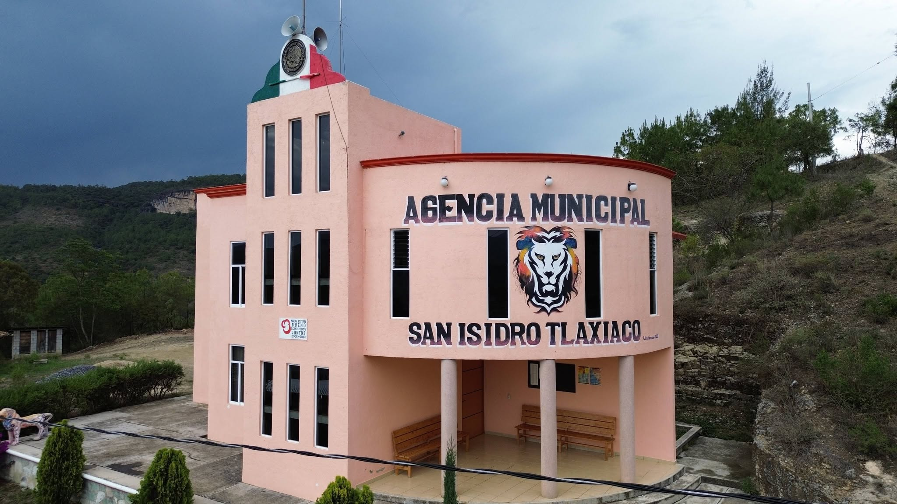

|
|
 |
Nduva Xndika'a
Nu ñuu nduva Xndika'a, ñuu nduwa iyoo jin ñuu nani nduva xtika'a, ndinuu.
Aqui podremos encontrar diferentes costumbres y tradiciones además de la riqueza cultural que puede ser lo que nos hace identificarnos y
kaa kajika: Kuu ndakandi'i ndaa ki de ndee ndaa ne'e jin nde ñuu, kindo ñeeti nu kaa vetiñuu, ku jin ndaa tee ñuu ja kananidee Florencio Ortiz Cruz,Zacarias Epifanio jin Martin Claudio.
ve'e satantan: kindoo ñeti nuu kuya'vi ndaa ndatiñu ñuu, vese nduu kaneva'a ndi'i nda ja kajatiñu kaneva'a ja kui kasatatan numi nda ñayive ku'u |